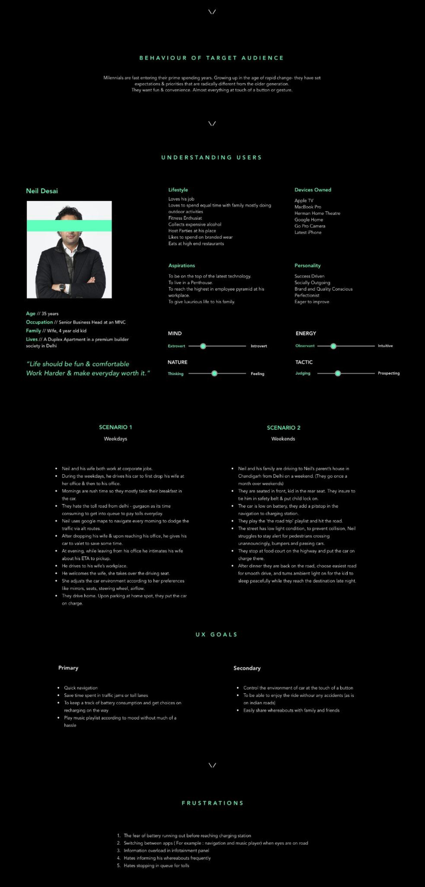
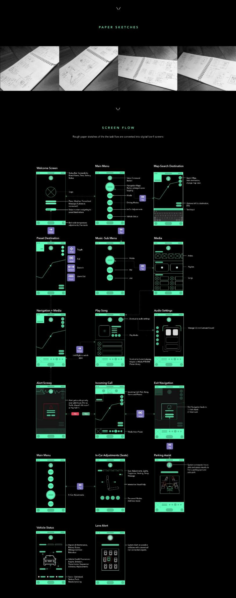

TESLA (CONCEPT) · AUTOMOTIVE · IN-CAR UX · CONCEPT STUDY
Tesla — Infotainment System
Current luxury EVs offer powerful technology wrapped in interfaces that demand too much attention from the driver. This concept redesigns the in-vehicle experience for a 2025 electric SUV on Indian roads — road-assist alerts, adaptive lane guidance, and progressive disclosure that keeps a Level-3 autonomy co-pilot legible, not overwhelming.
View full PDF ↗
01 — OVERVIEW
Redesigning the EV cockpit experience
This is a self-initiated concept study exploring what a next-generation in-vehicle infotainment system should feel like for India's growing premium EV market. The brief was self-defined: design a dark HMI system that makes Level-3 autonomy accessible and safe for everyday drivers — without the visual overload of current luxury EV interfaces.
The system covers: navigation and road-assist overlays, autonomy status and handoff alerts, climate and media control, and the driver assistance dashboard — all designed to be glance-readable in under 1.5 seconds.
02 — PROBLEM
What's broken in current EV interfaces
"Current luxury EV infotainment systems present too much information at once — making the driver work harder, not less. Level-3 autonomy should reduce cognitive load, not add to it."
01
Visual overload
Current interfaces display 15+ data points simultaneously — requiring sustained attention from the driver.
02
Disconnected features
Navigation, autonomy, climate, and media are siloed — switching between them requires multiple taps.
03
Unclear autonomy status
Users aren't sure when the car is driving vs. when they need to take over — dangerous ambiguity.
04
Not designed for Indian roads
Existing HMI assumes highway driving. Indian roads need pedestrian alerts, cattle detection, and narrow-road modes.
03 — USERS
Who drives a premium EV in India
Primary: Urban tech-forward driver
- 35–55 years old, urban professional
- Comfortable with technology but not an expert
- Uses Level-2 autonomy features daily (lane keep, cruise)
- Drives in mixed urban/highway conditions
- Values safety above all other features
Secondary: Weekend/highway driver
- Uses Level-3 autonomy primarily on highways
- Wants to use autonomy time for calls/media
- Needs clear alerts when handoff is required
- Less familiar with detailed autonomy status UI
- Longer sessions — needs fatigue-aware design
04 — RESEARCH
Competitive analysis and design principles
We benchmarked Tesla Model S, BMW iX, and Mercedes EQS HMI systems — analysing information density, glance-readability, and autonomy status communication. We also studied NHTSA guidelines on driver distraction and the 1.5-second glance rule for safety-critical displays.

Competitive HMI analysis — identifying overload patterns across current luxury EV interfaces
05 — KEY INSIGHTS
Design principles that emerged
Glance-readability over completeness
Every screen was designed to communicate its primary message in under 1.5 seconds — the NHTSA safe glance duration. Information that can't be read in a glance was moved to the detail layer.
Autonomy status must always be unambiguous
Colour-coding (blue = autonomous, amber = driver assist, red = take over now) creates an instant channel for autonomy state that doesn't require reading text.
Progressive disclosure separates driving UI from feature UI
Driving (navigation, speed, alerts) is always visible. Features (media, climate, settings) are one tap away but never compete with driving information for visual priority.
Indian road conditions require specific alert types
Pedestrian crossing alerts, narrow road mode, cattle/obstacle detection, and monsoon grip warnings — these required custom alert patterns not present in Western EV systems.
06 — DESIGN PROCESS
Designing the HMI system
Benchmark
Tesla, BMW iX, Mercedes EQS analysis
Principles
Safety guidelines + design principles
Information Architecture
Screen hierarchy + layer mapping
Dark HMI System
Design language + component system
14 Screens
Complete IVI flow design
07 — FINAL SOLUTION
14 screens. One design language.
The final system uses a dark base HMI with three colour channels — blue for autonomy active, amber for driver attention required, red for immediate handoff. A persistent top bar shows speed, autonomy status, and charge. The bottom navigation gives one-tap access to Nav, Drive, Media, Climate, and Settings — each opening an overlay that doesn't replace the driving view.

14 screens · dark HMI design language · glance-optimised hierarchy
08 — KEY LEARNINGS
What this project taught me
Safety constraints produce better design
The 1.5-second glance rule felt restrictive — but it eliminated every design decision that didn't truly matter. Constraints that come from real user safety produce the clearest, most intentional interfaces.
Colour as a communication channel, not decoration
In an HMI context, colour must do real work — not just set a mood. Building a three-state colour system for autonomy (blue/amber/red) made the design function without requiring text to be read.
Localisation is more than translation
Designing for Indian roads wasn't about language — it was about the specific alert types, road conditions, and driving patterns that don't appear in Western EV systems. Context shapes the entire feature set.
In-vehicle UX is the most consequential interface design — every pixel decision affects safety.